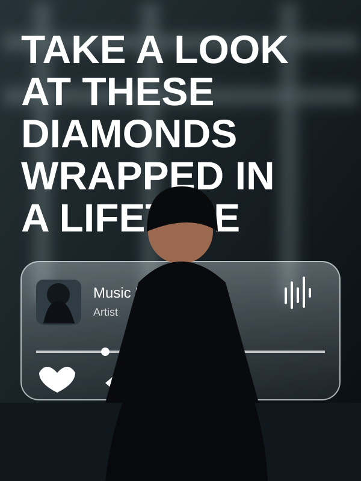
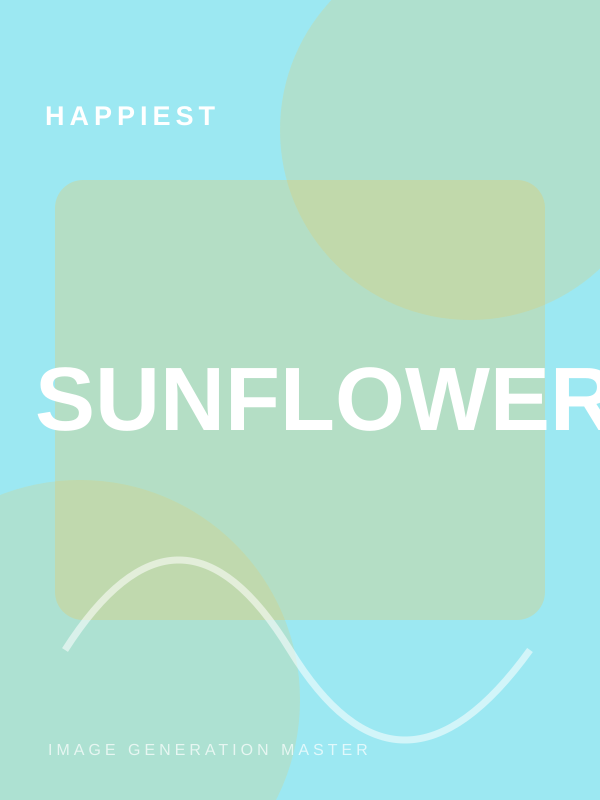
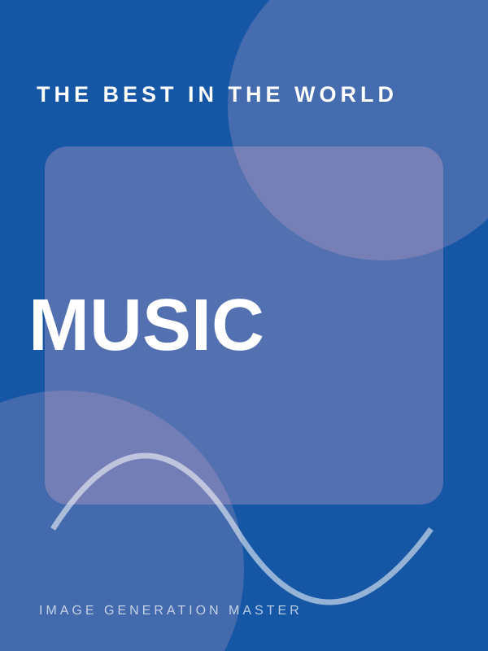
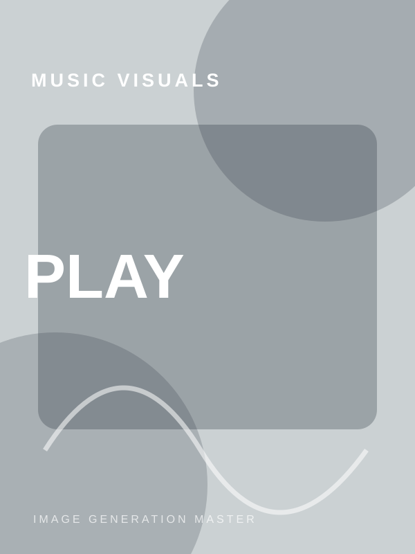
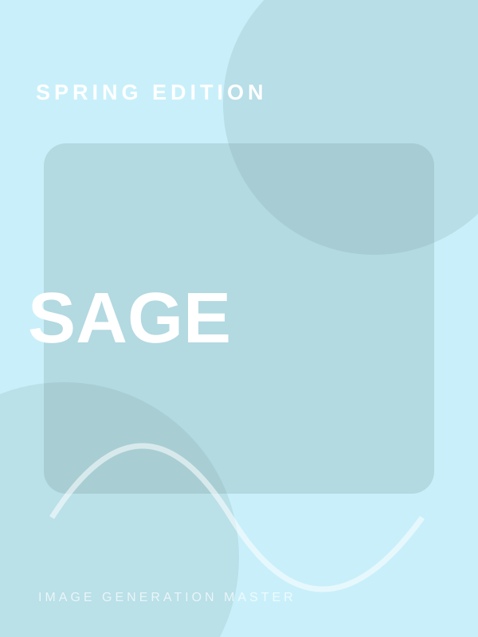
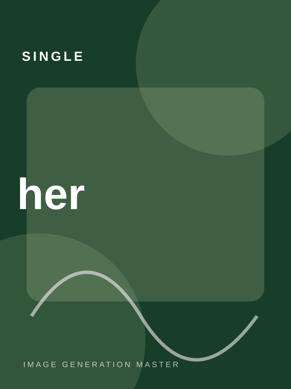
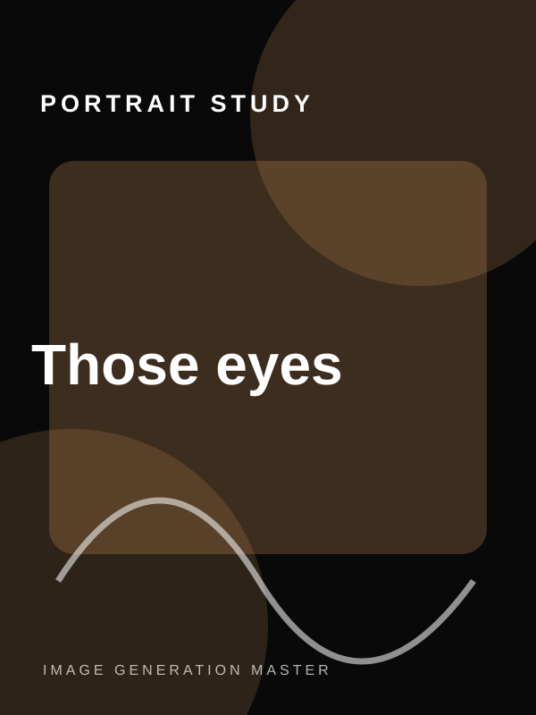

Music
Urban music-player editorial
Black tailoring, oversized type and a floating frosted-glass music UI.
Open study & JSON ↗A visual playground for reverse-engineering image references and building precise, production-ready prompts. Explore the composition, styling, camera language, lighting and design decisions behind each study.

Choose a visual direction to open its dedicated study page. Each page includes the artwork preview and a copy-ready structured JSON prompt.
Black tailoring, oversized type and a floating frosted-glass music UI.
Open study & JSON ↗
TypographyCyan botanical collage, dimensional typography and sunflower portrait.
Open study & JSON ↗
FashionOversized pale-blue typography, black tailoring and pink blossoms.
Open study & JSON ↗
MusicA fashion portrait surrounded by floating playback interface cards.
Open study & JSON ↗
MagazinePastel magazine cover, teal panel, oversized serif type and botanicals.
Open study & JSON ↗
Album artGround-level streetwear perspective with foliage and album artwork.
Open study & JSON ↗
PortraitBeauty close-up with a narrow horizontal strip of warm eye light.
Open study & JSON ↗Learn how to translate what you see into controllable prompt components, without losing the visual character that made the reference interesting.